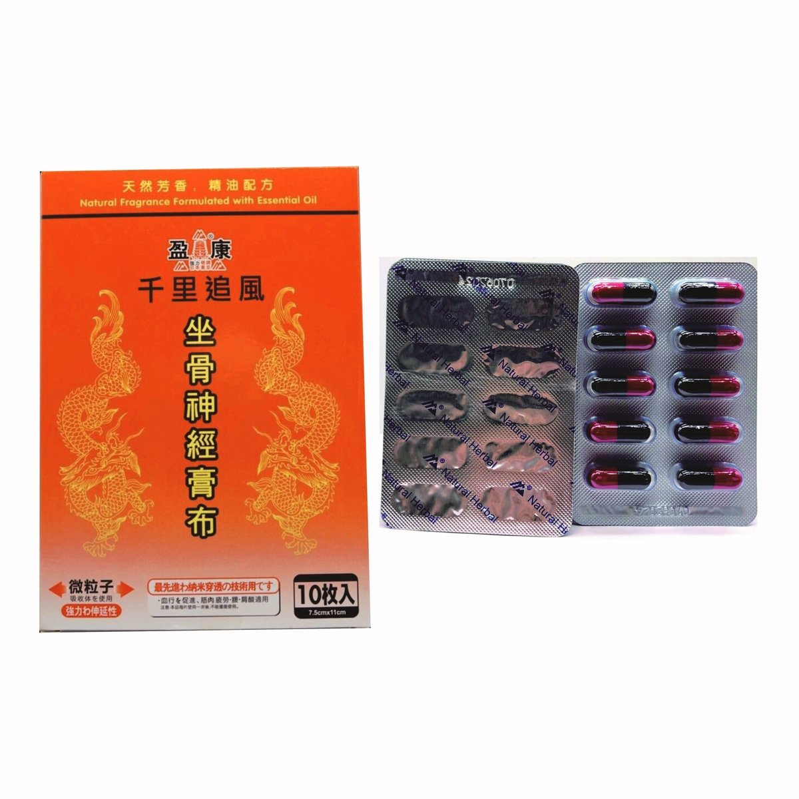
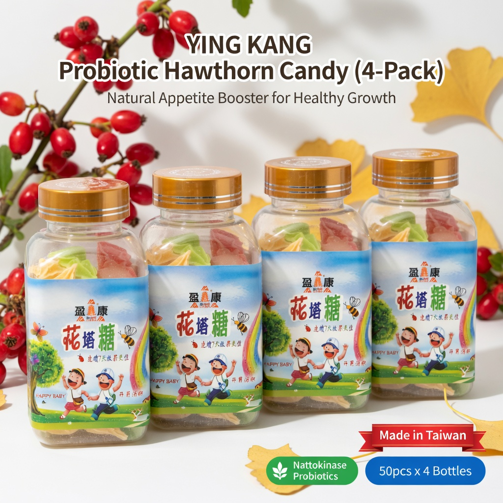

盈康 · 套裝
坐骨神經膏布＋炎必清專打上火、暗瘡、咽喉腫痛！清熱解毒草本膠囊，熬夜應酬、濕熱體質人士必備——要消腫、去火、穩免疫，就揀佢。
「坐骨神經膏布＋炎必清」為盈康香港輕養生目錄產品，規格重點包括：舒緩關節不適、局部僵硬、清熱降火、牙肉紅腫。詳情請以包裝及 HKTVmall 頁面為準。
可經 HKTVmall 或 WhatsApp 6222 7238 確認庫存與用法。本站不設即時扣款結帳。
以下詳圖取自 HKTVmall 盈康店舖同一 SKU（H6838001_S_y10），可直向滑動瀏覽。

坐骨神經膏布＋炎必清專打上火、暗瘡、咽喉腫痛！清熱解毒草本膠囊，熬夜應酬、濕熱體質人士必備——要消腫、去火、穩免疫，就揀佢。
清熱解毒・強力消炎養生
相關搜尋關鍵字：坐骨神經膏布＋炎必清、坐骨神經膏布＋炎必清功效、坐骨神經膏布＋炎必清好處、坐骨神經膏布＋炎必清邊度買、痛點、功效、好處、炎必清、強力炎必清、清熱解毒、消炎、暗瘡、咽喉腫痛、上火、濕熱、穿心蓮、紫錐花、蒲公英、口臭、清熱膠囊、香港炎必清、盈康炎必清、去火、涼血、免疫力、邊度買炎必清
一次備齊常用
家人分享裝
週期護理更方便
可 WhatsApp 問用法
「坐骨神經膏布＋炎必清」為盈康香港輕養生目錄產品，規格重點包括：舒緩關節不適、局部僵硬、清熱降火、牙肉紅腫。詳情請以包裝及 HKTVmall 頁面為準。
詳細成分配方請以產品包裝及 HKTVmall 商品頁為準。本頁不作未核實之檢測數據陳述。
以目錄現價與包裝規格為準，方便對照選購。
「坐骨神經膏布＋炎必清」為盈康香港輕養生目錄產品，規格重點包括：舒緩關節不適、局部僵硬、清熱降火、牙肉紅腫。詳情請以包裝…
盈康香港輕養生 HKTVmall 店舖同步上架。
WhatsApp 6222 7238 僅作備用聯絡。
| 建議用法 | 請分別依各單品包裝說明使用；有疑問可 WhatsApp 查詢。 |
|---|---|
| 劑型 | 套裝 |
| 保存 | 請置於陰涼乾爽處（約 25°C 以下），避免陽光直射，並放於兒童接觸不到的地方。 |
| 注意 | 孕婦、兒童及長期病患者請先諮詢專業意見。外用產品避免接觸眼睛與破損皮膚。 |
| 產品名稱 | 坐骨神經膏布＋炎必清 |
|---|---|
| 品牌 | 盈康 |
| 分類 | 盈康 · 套裝 |
| 產地 | Hong Kong |
| SKU | H6838001_S_y10 |
| 售價 | HK$234（以 HKTVmall 當日為準） |
| 客服 | WhatsApp 6222 7238（備用） |
尹淑梅中醫師（從醫五十多年・香港註冊中醫師）支持盈康「說明可查、日常可依」的輕養生理念。其榮譽包括香港中國醫藥研究院榮譽院長、香港中國醫藥學會永遠榮譽會長，並榮登《世界名人錄》及傑出英才錄。
推薦反映品牌理念認同。


